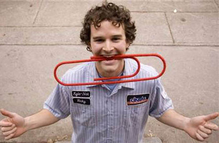
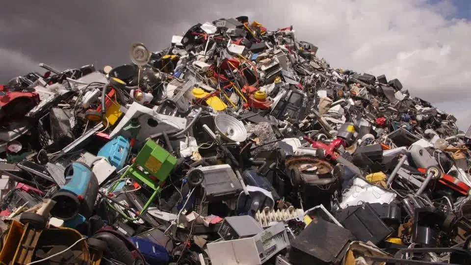

|
Evolving Technology and Unimagined Outcomes The evolution of technology has definitely created great opportunities, but it also brought problems. It has become integrated into everyday life and has become normalized. Too much of technology and networking has proven to have brought negative consequences so the goal is to strike a balance in all aspects of life. Jean Baudrillard and Simulated Society French Sociologist Jean Baudrillard (1929-2007) warned us about how humans now live in “simulations” that we perceive as real. He believed that technology is keeping us disconnected from reality because as we make technological advancements, we move away from the natural state that we started in. He cited examples like rain is not treated as an inconvenience when it was valued a long time ago to grow food; wildlife now consists of squirrels, raccoons, and skunks as all of the large predators have either been killed or have given way to the creation of large metropolis; and cities are now made of concrete and plastics that were unheard of long time ago. For Baudrillard, we have now entered another level of this simulation as we move more of our time onto the Internet to play video games or connect to our online social networks. He further said, we now feel close to people who live far away, and yet we may not even know our neighbors. |
|
The Power of Social Networking  The power of social networking can be illustrated by showing the case of a Canadian Blogger Kyle Macdonald who bartered his way from a single red paperclip to a two-story farmhouse in Kipling, Saskatchewan. It took him 14 transactions in ten months to achieve his dream of home ownership with the assistance of technology to promote his version of the childhood game of Bigger and Better. He used social media to advertise his quest and generate people to participate in his goal. His story was picked up on the Internet which caused his popularity to grow. Technology was key in helping Macdonald’s dedication to achieve his goals. Virtual Space - The New Frontier The virtual space (that exists within the scope of the Internet) and the real world are now coming together in ways not imagined in the past. It is a unique environment of its own. It has become a place where people and organizations find themselves doing business or transactions from producing, procuring, packaging, transporting, transferring, disseminating all kinds of information, products, and services.
The virtual space has also become a place where movements or transfers of wealth and money happen in any and every part of the world. It is no longer uncommon if you hear about people making a good living out of using the virtual space, and people who have been scammed millions of dollars because of shady virtual transactions. |
|
Positive effects of Technology |
Negative Effects of technology |
|
Poor social skills due to social isolation Decline in the quality of education (increased cheating and plagiarism, declining analytical and critical thinking skills) Negative physical effects (obesity, poor eyesight, incorrect posture, hearing loss, tendonitis) Violation of privacy and security (cyberbullying, sexting, phishing scams, pyramid schemes, Ponzi schemes, copyright violations) Mental health (depression; chronic smartphone stress or fear of missing out; addiction to gaming, entertainment, and socializing; poor sleeping patterns; provocation of violence) |
|
Techno Waste Touted to be as powerful as they are, technological devices nowadays (computers, cell phones, video game consoles, etc.) become obsolete after a few years of being created.
 Canadians will face an environmental mess if electronic devices are not disposed of properly. The country though is committed to keeping electronics out of landfills. So Canadians usually pay an environmental handling fee when purchasing a new computer, laptop, television and other electronics. This fee covers the costs associated with the safe and responsible recycling of obsolete electronics. Covid - 19 and Inequality The coronavirus pandemic has reached at least 215 countries and territories, according to the World Health Organization. As of January, the virus has infected over 99 million people and killed more than 2.1 million. Countries are enforcing safety measures aimed at slowing the spread of the virus. But not everyone is experiencing the pandemic in the same way. Let’s look at the ways existing worldwide inequality is affecting pandemic response, by asking 20 questions. |
|
Who can work from home? Some workers will be able to ride out the pandemic more easily than others. To reduce the risk of spreading the virus, companies are increasingly having employees work from home, but that’s not possible for everyone. “For the many Americans who do not work in high-tech offices...working from home will not be logistically possible,” CNBC reports. While white-collar workers line up Zoom chats, grocery clerks, meatpackers and home care aides are still going into work and risking infection, and millions of people in industries like tourism and food service have lost their jobs entirely. Who can practise social distancing? The pandemic has popularized the concept of “social distancing”—staying at least two metres (six feet) from other people to reduce the spread—but not everyone can do that. Dense urban areas are particularly challenging. “Poor housing conditions in enclaves where neighbours squeeze past each other in tight hallways, several persons living in small spaces, multiple family members sleeping in one room, and limited bathroom and washing facilities that are shared by some 20 persons at a time make social distancing impossible,” observes a journalist for The Gleaner, a Jamaican daily newspaper. Who are essential workers? Many of those still going to work—like grocery store clerks, delivery drivers and cleaners—were already dealing with poverty, job insecurity and difficult working conditions before the pandemic. “Workers deemed ‘essential’ are also more likely to live below the federal poverty line or hover just above it,” NBC News reports. “They are mostly women, people of color and more likely to be immigrants.” For example, more than 85% of warehouse and delivery workers in the Los Angeles area are people of colour and 53% are foreign-born, NBC News reports. |
|
Which groups face higher risks?
Who can access the internet? For people who have it, internet access has been crucial during the pandemic, keeping us connected to work, to school, to public health information, to our friends and family and to sources of entertainment. Many telecom companies have removed usage caps for the duration of the pandemic. But that’s no help for people who don’t have regular internet access. According to The Atlantic, “something like 30 percent of American households didn’t have a broadband internet connection [in 2017], and millions of people only connect to the internet through their phones, frequently with meager data plans,” limiting their access to many important resources. Who has health insurance? The United States is the only wealthy country that does not provide health care for all citizens. Millions of Americans depend on their jobs for health insurance. People who lost their jobs also lost access to employer-funded health insurance. According to CBC, citing several studies, “while most will qualify for a subsidized backup plan, nearly six million won't.” U.S. president Donald Trump has said his government will alleviate some of the burden by reimbursing hospitals for treating uninsured coronavirus patients, but many people facing bills for pregnancy or chronic illness management lack options. |
|
Who can legally access health care? Even in countries that provide universal health care, people without immigration status can’t always access it. In light of the pandemic, Ireland, Portugal (pictured) and some Canadian provinces have expanded access to their healthcare systems, covering undocumented immigrants in some cases. The United Kingdom is one jurisdiction that has not, despite warnings that some undocumented people have died after being too afraid to seek care. Who has access to ventilators? Like “social distancing,” “ventilator” has become a household word during the pandemic. Ventilators are pieces of equipment that help the hardest-hit COVID patients breathe—and whether a patient has access to one depends largely on where he or she lives. In the United States, a 2018 study estimated that the country had 160,000 ventilators. In Africa, the World Health Organization has counted only about 2,000 ventilators, spread across 41 countries. How are lockdowns enforced? Since many countries went into some form of lockdown in March, law enforcement officers have had to enforce the restrictions. According to The Guardian, the toughest punishments tend to fall on the most vulnerable people. Police have sprayed migrant workers with toxic disinfectant in India, locked offenders in dog cages in the Philippines and beaten commuters with sticks in Kenya. “It is often the least well off—who cannot afford to stop working... who are targeted by such punishments,” the British newspaper reported. |
|
Where are the healthcare workers? Not every country or region has enough healthcare professionals to meet the needs of its population. For example, according to World Bank data, Afghanistan has only 0.3 physicians per 1,000 people and many African nations have fewer. High-income countries, on average, have three doctors for each 1,000 people. Even in better-off countries, such as the UK and the U.S., rural communities struggle with doctor shortages. Who must stay home? Coronavirus has had a disproportionate effect on the daily lives of elderly people, since they’re believed to be at higher risk of complications from the disease. “Older adults have been instructed to limit face-to-face interactions with people outside their immediate household” to reduce their likelihood of getting the virus, ABC News reports. Health professionals worry that older adults, especially those who don’t master technology, are “cut off from the types of activity that bring meaning or purpose to their life.” Who gets blamed? Around the world, members of some racial and religious minority communities, some of whom already faced discrimination, are becoming scapegoats for the coronavirus. In Canada and the U.S., Asians and Jewish communities (pictured) have faced discrimination and harassment after being falsely accused of contributing to the virus’s spread. Members of India’s Muslim minority have also faced harassment and violence. In China, African immigrants are sometimes blamed for the virus, and some have been evicted from their apartments. |
|
Who loses assistance? In the United States alone, more than 60 million people have disabilities. Not only are people with some types of disabilities more at risk for the virus, but the lockdown has made it difficult for the personal support workers many disabled people rely on to safely visit them or help them with daily tasks such as cooking and shopping. “This [pandemic] has completely changed my access to the community,” one young woman with cerebral palsy told Time magazine. Who does the housework? With schools closed and many adults working from home, the burden of housework, caring for the sick and educating children falls disproportionately on women—who often have to work at the same time. Two scientific journals recently observed that while contributions from male academics had increased during the pandemic, contributions from women decreased, suggesting they were busy with other duties. Who’s at risk of abuse? Since lockdowns began, cities across North America have recorded spikes in calls to domestic violence hotlines, from women trapped with partners who abuse them or their children. “It feels as though it tripled overnight,” one victims’ rights advocate in Toronto told the National Observer. People being abused have less access to friends and family, and abusers’ behaviour may become more dangerous or unpredictable under stress, according to the Council on Foreign Relations. A UN study predicted that six more months of lockdown could lead to 31 million more instances. |
|
How do children learn? Homeschooling during lockdown is not the same for every student. Low-income students may struggle with unstable internet connections, food insecurity, a lack of study space, or the trauma of seeing family members, who are often essential workers, put themselves in danger. Large families may have to share a single laptop or tablet or rely on a phone. Not all parents have the time, technological ability or language skills to guide their children through online learning. “My concern is that [low-income students] will fall even further behind,” one children’s advocate in New York told Vox. Who can shelter in place? It’s difficult to shelter in place if you have no home. Some homeless shelters are closing, and at those that are open, it’s often impossible to maintain social distancing. Places where homeless people often access clean public washrooms, such as libraries, malls and coffee shops, are closed, and some food banks have closed or reconfigured their services. According to Wired, some homeless people have to resort to leaves and rubbing alcohol to keep clean. Homeless people are also more likely to suffer from chronic illnesses which can make them more vulnerable to the virus. “Homelessness is incompatible with health,” journalist Emma Grey Ellis observes in Wired. |
|
Who has access to water? Along with sheltering in place, regular hand-washing is one way to prevent the spread of coronavirus. However, not everyone has access to water. Globally, according to World Vision, about 844 million people lack access to clean water. Crowded informal settlements in India, South Africa and Brazil struggle with access to water, toilet and shower facilities, as do refugee camps. The problem of lack of water access isn’t limited to the Global South, though—people in Detroit and some other U.S. cities are having their water turned off because of inability to pay their bills, according to the BBC. What happens to Indigenous communities? Native Americans have been sounding the alarm on coronavirus risk. Not only do many Native Americans struggle with chronic health conditions, many also lack health care and live in cramped conditions, and may not have running water. Many Indigenous communities are also in remote areas. “You can’t isolate if [you] have to drive 100 miles to get food and water,” the head of the U.S. COVID-19 response team for Doctors Without Borders tells CBS News. The international medical charity sent a team to the Navajo Nation to help local leaders address COVID response, something it rarely does in North America. COVID death rates in Navajo territory are higher than in 46 of the 50 states. The pandemic’s effect on the elderly has also threatened endangered languages and cultural knowledge. |